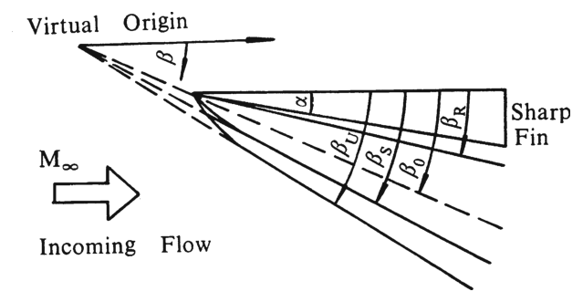
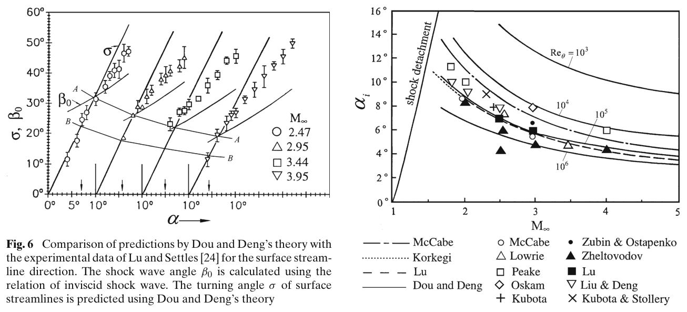
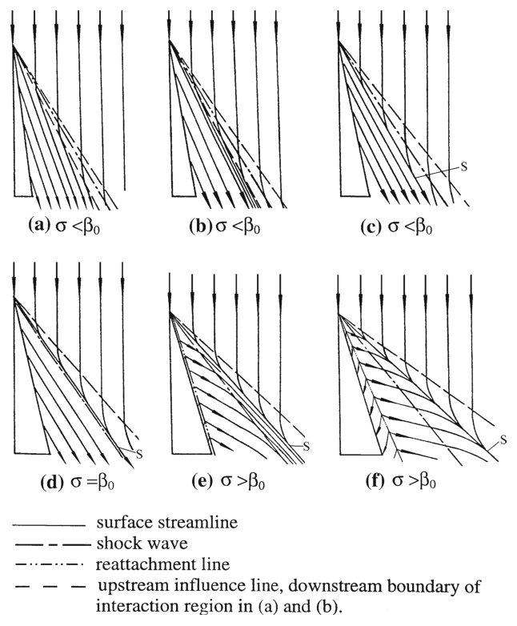
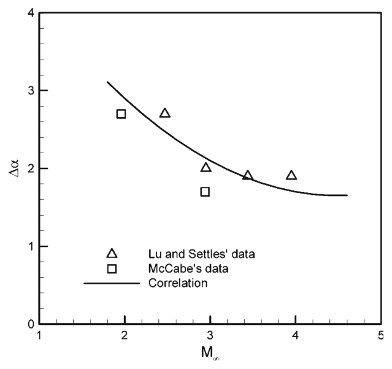

01中文摘要
研究尖鳍诱导的激波/湍流边界层干扰初始分离。现有McCabe（1966）和Dou-Deng（1992）理论只能预测表面流线方向，按Stanbrook判据往往高估初始分离条件。本文先用Dou-Deng理论预测，再与Lu-Settles（1990）实验数据比较，并通过表面流型分析解释初始分离机理、澄清预测偏差。研究发现：当激波后壁面极限流线与虚拟原点出发的某条射线对齐、且壁面极限流线与当地压力梯度垂直时，形成初始分离线，这标志分离过程开始。文中还讨论雷诺数和马赫数对初始分离的影响，并给出修正理论预测初始分离角的关联式。
02阅读说明
依据 deep_input/1297.md 全文（721 行，12 页，含图件清单与带页码 OCR 文本）精读；公式(1)–(17)已对照原 PDF 第 4–7、11 页核验。受 OCR 排版限制，第(15)式弱斜激波近似式中二次项系数的逐项形式无法完全确认，正文中已注明。图件 file/n/page 原样取自 bundle 图件清单；图注为中文重述，未增补图外信息。 文章类型：期刊
03一句话核心与三句话摘要
尖锐鳍诱导的起始分离由横向压力梯度二次流决定，Stanbrook 判据会高估起始分离角，需按马赫数修正。
- 论文用 Dou–Deng 的斜压边界层理论预测尖锐鳍诱导的扫掠激波/湍流边界层干扰起始分离，并与 Lu–Settles 油膜表面流线实验对比，指出基于 Stanbrook 判据的理论系统性高估起始分离角。 原文明确
- 高估的根源在于锥形相互作用中“起始分离线”在 σ<β0 时已经形成：壁面极限流线自上游汇聚成单线并与局部压力梯度垂直；而 σ=β0 的 Stanbrook 状态出现得更晚，柱形相互作用中两者才重合。 AI概括
- 作者据此把 c、d 两状态之间的偏转角差 Δα 仅视为来流马赫数的函数，拟合出修正相关式并给出修正后的起始分离角 αic=αi−Δα，但该修正建立在有限文献实验数据与简化假设之上。 AI概括
04核心内容清单
| 要点 | 类型 | 重要性 | 原文依据 | 属性 |
|---|---|---|---|---|
| 研究问题：现有基于 Stanbrook 判据的尖锐鳍起始分离理论虽能预测分离前表面流线方向，却系统性高估起始分离角。 | 研究缺口 | A | p426 摘要；p427 第 1 节 | 原文明确 |
| 方法核心：用 Johnston 三角横流模型 + Prandtl–Meyer 外流近似 + Smith 可压缩壁面律（yp=11）构建 γw(α) 的解析计算链。 | 方法 | A | p428–431，第 2 节，式(1)–(14) | 原文明确 |
| 参数 A 可积成闭式解式(6)，从而避免逐点积分，是理论可工程化计算的关键。 | 推导结果 | B | p429，式(4)–(8) | 原文明确 |
| 起始分离判据取 σ=α+γw=β0，即壁面极限流线与无粘激波平行。 | 判据 | A | p431，第 2.4 节 | 原文明确 |
| 分离前 σ 的理论预测与 Lu–Settles 四个马赫数实验吻合良好，说明流线方向模型本身可靠。 | 验证 | A | p431–432，Fig. 6 | 原文明确 |
| 起始分离角预测值高于实验值，且实验值甚至低于 Korkegi 判据，构成本文要解释的主要矛盾。 | 结果 | A | p432，Fig. 7 | 原文明确 |
| αi 随 Reθ 增大而减小；Dou–Deng 理论能反映该趋势，McCabe 理论不能。 | 参数趋势 | B | p432，第 3.1 节，Fig. 7 | 原文明确 |
| 表面流型六阶段表明：起始分离线在 σ<β0 时已形成，壁面极限流线汇聚并与局部压力梯度垂直；σ=β0 出现更晚。 | 机理 | A | p432–434，第 3.2–3.3 节，Fig. 8 | 原文明确 |
| 锥形干扰中 c、d 状态存在角差 Δα，柱形干扰中二者重合；因此 Stanbrook 判据只直接适用于柱形干扰。 | 适用边界 | A | p434，第 3.3 节；p435 结论 3 | 原文明确 |
| Δα 随 M1 增大而减小，作者据此提出仅依赖 M1 的经验修正 αic=αi−Δα。 | 经验修正 | B | p434–435，式(16)(17)，Fig. 9 | 原文明确 |
| 修正式的物理解释是：高估并非流线方向算错，而是锥形流中实际起始分离早于 Stanbrook 平行状态。 | 解释 | B | p433–435，第 3.2–3.4 节 | AI概括 |
| 修正假设较窄（Δα 仅与 M1 有关、数据有限），外推到其他 Reθ/壁温/构型需谨慎。 | 局限 | C | p434–435，第 3.4 节 | AI推断 |
05引言：研究问题与领域缺口
第 1 节（p425–427）说明扫掠激波/湍流边界层干扰（SW/TBLI）是高速飞行器与流体机械设计中的基础问题；尖锐鳍诱导的三维干扰中，起始分离的判定与机理长期未解决。已有 McCabe、Korkegi、Lu 等方法均以 Stanbrook 判据（壁面极限流线与无粘激波平行，σ=β0）预测起始分离，虽能较好预测分离前的表面流线方向，却普遍高估起始分离角；Lu–Settles 的实验甚至显示分离角低于 Korkegi 值。作者据此提出：用物理基础更强的 Dou–Deng 理论重新预测，与 Lu–Settles 数据比较，并通过表面流型演化澄清高估原因，最后给出工程修正相关式。
06流动条件与几何构型
| 项目 | 数值/描述 | 依据 | 备注 |
|---|---|---|---|
| 来流与几何构型 | 尖锐鳍安装在平板上，超声速来流；M∞≥2.0 时横向压力梯度分量主导起始分离 | p427，第 2 节 | 研究对象为三维扫掠激波/湍流边界层干扰，不是二维干扰 |
| 比热比 | κ=1.40 | p432，Fig. 7 图注 | 符号表与 Fig. 7 均给出 |
| 起始分离判据 | σ=α+γw=β0（Stanbrook 判据，壁面极限流线与无粘激波平行） | p431，第 2.4 节末 | 论文随后指出该判据在锥形干扰中晚于实际起始分离线 |
| 弱激波与 Prandtl–Meyer 近似 | 起始分离时激波一般较弱，激波前后马赫数关系用 Prandtl–Meyer 等熵关系近似；作者称相对精确激波关系的误差“very small” | p429，第 2.1 节 | 该近似是 A 的闭式解式(6)的前提 |
| 三角模型顶点高度 | yp=11（粘性底层与对数律层的交界） | p430，第 2.2 节 | 低速文献原用 yp=14；作者依据 M1=3.0 实验与二维湍流边界层结构改取 11 |
| 温度恢复因子 | 绝热湍流边界层一般取 R=0.88；2≤M1≤6 时用式(12) R=0.80+0.01(8.0−M1²) | p430，式(11)(12) | 用于密度比 ρe/ρw=Tw/Te=1+((k−1)/2)RM2² |
| 弱斜激波角近似式适用范围 | α≤15°、2≤M1≤5，相对精确值误差小于 1% | p431，式(15)前 | 式(15)本身受 OCR 排版限制，逐项系数无法完全确认 |
| 用于比较的起始分离实验数据 | Reθ=5×10³–5×10⁴，几乎所有数据对应 Reθ≈10⁴ | p432，Fig. 7 图注及正文 | 数据来自文献油膜表面流型实验，非本文新实验 |
| 修正相关式适用范围 | 1.6<M1<5；假设 Δα 仅为来流马赫数 M1 的函数 | p434–435，式(16)(17) | 拟合仅用 Fig. 9 所示两组数据 |
| 壁面法向速度处理 | 忽略边界层内法向速度对流线偏转的影响 | p431，第 2.4 节 | 理由是法向速度比流向速度小一个量级以上 |
| 流场拓扑假设 | 尖锐鳍诱导的表面流型为锥形，虚拟原点近似位于鳍尖；各流动量沿射线为常数 | p432–433，第 3.2 节 | 这是与柱形干扰区分的核心几何条件 |
| Johnston 三角模型的适用条件 | 壁面剪切角 γw 不很大、横向流动非双向时近似最好 | p428，第 2 节 | 模型分内区 collateral 流与外区受外部无粘流控制的两层结构 |
| 研究类型与数据来源 | 解析理论预测 + 文献实验数据对比；文中未提及本文开展新的风洞实验或 CFD 计算 | p431–432，第 3.1 节 | 实验数据主要来自 Lu–Settles [24] 及文献 [10] |
07核心现象与关键参数
| 参数 | 定义 | 数值 | 关系/说明 | 依据 |
|---|---|---|---|---|
| M1（或 M∞） | 来流马赫数 | 算例与修正范围覆盖 1.6<M1<5；式(15)适用 2≤M1≤5 | 决定 β0、M2、A 与 Δα | p429–431，式(5)–(8)、式(15)；p435 式(16) |
| α | 主流偏转角，以相互作用开始时速度矢量方向为基准 | 随激波增强逐渐增大；式(15)近似要求 α≤15° | σ=α+γw | p425 符号表；p431 第 2.4 节 |
| γw | 壁面剪切角，即壁面极限流线与边界层外缘流线方向之间的夹角 | 由式(10)计算，随 α 增大 | tanγw=A[0.13/√((ρe/ρw)Cfxcosγw)−1] | p425 符号表；p430 式(10) |
| σ | 壁面极限流线相对来流方向的转折角 | σ=α+γw；判据取 σ=β0 | σ=α+γw | p425 符号表；p431 第 2.4 节 |
| β0 | 无粘激波迹线相对来流方向的角度 | 由隐式斜激波关系或式(15)计算 | tanβ0≈1/√(M1²−1)+⋯（高阶项受 OCR 限制） | p431，式(15) |
| Reθ | 基于动量厚度 θ 的雷诺数 | 实验数据 5×10³–5×10⁴；αi 随 Reθ 增大而减小 | 通过 Cfxi 式(14)与式(13)影响壁面摩擦与 γw | p431 式(14)；p432 第 3.1 节与 Fig. 7 |
| A | Johnston 三角模型中的横流速度剖面参数 | 由式(6)闭式计算 | A=(M2²/(1+((k−1)/2)M2²))[arccos(1/M1)−arccos(1/M2)−√(M1²−1)/M1²+√(M2²−1)/M2²] | p429，式(4)(6) |
| (u/ue)p | 三角模型顶点处的流向速度比 | 由式(9)计算，其中 yp=11 | (u/ue)p=√(yp)√[(ρe/ρw)(Cfxcosγw)/2]，yp=yp/νw·√(τw/ρw) | p429–430，式(9) |
| yp | 三角模型顶点对应的无量纲壁面法向高度 | 11 | 位于粘性底层与对数律层交界 | p430，第 2.2 节 |
| R | 壁面温度恢复因子 | 绝热湍流边界层约 0.88；2≤M1≤6 时用式(12) | ρe/ρw=Tw/Te=1+((k−1)/2)RM2² | p430，式(11)(12) |
| Cfx/Cfxi | 可压缩与不可压缩当地壁面摩擦系数之比（沿主流动方向分量） | 由式(13)给出；Cfxi 由式(14) Karman–Schoenherr 型关系给出 | Cfx/Cfxi=(1+0.13M²)^(−0.73) | p431，式(13)(14) |
| Δα | Fig. 8 中 c 状态（起始分离线形成）与 d 状态（σ=β0）之间的偏转角差 | Δα=0.20M1²−1.8M1+5.70，1.6<M1<5；随 M1 增大而减小 | αic=αi−Δα | p434–435，式(16)(17)，Fig. 9 |
| αi、αic | 理论预测的起始分离角与修正后的起始分离角 | αic=αi−Δα；αi 随 Reθ 增大而减小 | αic=αi−Δα | p435，式(17)；p432 Fig. 7 |
| κ | 比热比 | 1.40 | 出现在式(5)–(8)、(11)、(15) | p432 Fig. 7 图注；p425 符号表 |
08方法与数据
第 2–3 节（p428–435）为解析理论分析，无新实验或 CFD。采用 Dou–Deng 的“斜压”边界层概念：流向压力梯度造成类似二维的黏性阻滞，横向压力梯度使速度剖面偏斜并产生二次流；当 M∞≥2.0 时横向分量占主导。用 Johnston 三角横流模型式(1)(2)描述边界层，导出 tanγw=A[(u/ue)p⁻¹−1]（式3）；A 由式(4)定义，借助弱激波下激波前后马赫数的 Prandtl–Meyer 近似，积分得闭式解式(6)，并由式(7)(8)联系偏转角 α 与 M1、M2。壁面参数 (u/ue)p 用 Smith 的 compressible 壁面律式(9)，取 yp=11（粘性底层与对数律交界）；密度比用式(11)、恢复因子 R 用式(12)；摩擦系数用式(13)(14)。激波角 β0 由隐式斜激波关系或式(15)近似计算。给定 M1、Reθ，随 α 增大计算 γw 与 σ=α+γw，以 σ=β0 作为起始分离判据，并与 Lu–Settles（1990）四个马赫数的油膜表面流线数据及文献起始分离角数据（Reθ=5×10³–5×10⁴）比较。最后由 Fig. 8 中 c、d 两状态的角差定义 Δα，假定其仅为 M1 的函数，拟合式(16)，并用式(17)修正理论预测。
| 项目 | 内容 | 依据 | 备注 |
|---|---|---|---|
| 总体研究设计 | 以 Dou–Deng 斜压边界层理论作解析预测，再用 Lu–Settles 油膜表面流线与文献起始分离角数据检验；通过 Fig. 8 的表面流型演化作机理解释；最后经验拟合修正 | p427–428，第 1–2 节；p431–435，第 3 节 | 无新实验、无 CFD；属于理论/综述性分析 |
| 边界层模型 | Johnston 三角横流速度剖面：内区 collateral 流，外区受外部无粘流控制；式(1)(2)(3) | p428–429，第 2 节 | 适用于 γw 不很大且横流非双向的情形 |
| 参数 A 的计算 | 式(4)定义 A=2ue²∫0^α dα/ue²；利用式(5)速度比与 Prandtl–Meyer 关系积分得式(6)闭式解 | p429，第 2.1 节，式(4)–(8) | 原文称忽略 Johnston 原式中的负号，只关心 A 的大小；并称 PM 近似误差相对精确激波关系很小 |
| 壁面速度比 (u/ue)p | Smith 可压缩壁面律式(9)，取 yp=11；结合式(10)求 γw | p429–430，第 2.2 节 | yp=11 的依据是 M1=3.0 实验显示黏性层与声速线高度随 Re 下降，并取二维湍流边界层黏性底层/对数律交界 |
| 密度比与恢复因子 | 式(11)由能量方程给出 ρe/ρw；绝热取 R=0.88，2≤M1≤6 时用式(12) | p430，式(11)(12) | R 的相关式引自 Dou–Deng [10] |
| 壁面摩擦系数 | 式(13)给出可压缩修正；式(14)用 Karman–Schoenherr 型关系计算不可压缩平板 Cfxi | p431，式(13)(14) | 式(14)据称适用于整个湍流边界层雷诺数范围 |
| 激波角计算 | 用隐式斜激波理论，或用式(15)弱斜激波近似（α≤15°、2≤M1≤5，误差<1%） | p431，第 2.4 节 | 式(15)的 OCR 排版有歧义，逐项系数无法完全确认 |
| 起始分离判定 | 对给定 M1、Reθ，随 α 增大计算 γw 与 σ=α+γw；当 σ=β0 时判为起始分离 | p431，第 2.4 节 | 这是 Stanbrook 判据的解析实现 |
| 与实验对比方式 | 用 Lu–Settles 四个马赫数的表面流线方向数据比较 σ；用文献起始分离角数据比较 αi；数据由油膜技术获得 | p431–432，第 3.1 节，Fig. 6–7 | 实验 Reθ 集中在约 10⁴，范围 5×10³–5×10⁴ |
| 表面流型分析 | 把激波增强过程分为 (a)–(f) 六阶段，区分“起始分离线”和“主分离线”，并比较锥形与柱形干扰 | p432–434，第 3.2–3.3 节，Fig. 8 | 六阶段图由大量文献表面流型实验总结而来 |
| 修正相关式拟合 | 取 c、d 状态角差 Δα，假定仅为 M1 的函数，用两组数据拟合式(16)，并以式(17)修正 αi | p434–435，第 3.4 节，Fig. 9 | 属于经验修正，不是从理论严格导出 |
| 误差与近似说明 | PM 近似误差称“very small”；式(15)误差<1%；法向速度忽略；未给出表面流线/分离角预测的整体定量误差 | p429–431 | 文中未提及不确定度分析或网格/实验误差传播 |
09核心推导与公式
用 Johnston 三角横流模型描述横向压力梯度造成的斜压湍流边界层，以 Prandtl–Meyer 等熵关系把外部偏转角 α 与激波前后马赫数联系起来，从而把 A 化为闭式；再用 Smith 壁面律确定三角模型顶点速度比 (u/ue)p，得到 γw(α)。起始分离由 σ=α+γw=β0 判定。随后通过表面流型分析识别出实际起始分离线早于 Stanbrook 状态，引入仅依赖 M1 的角差 Δα 作经验修正。
关键假设
- 三维扫掠激波/湍流边界层干扰可用斜压边界层概念描述：流向压力梯度造成黏性阻滞，横向压力梯度造成速度剖面偏斜和二次流
- 横向压力梯度分量在 M∞≥2.0 时主导起始分离
- 边界层横流速度剖面可用 Johnston 三角模型近似，内区为 collateral 流，外区受外部无粘流控制
- 壁面剪切角 γw 不很大，横向流动非双向
- 起始分离时激波较弱，激波前后马赫数关系可用 Prandtl–Meyer 等熵关系近似
- 边界层外缘激波可用一系列等熵过程表示，忽略法向速度对偏转的影响
- 三角模型顶点取 yp=11，即粘性底层与对数律层的交界
- 绝热湍流边界层恢复因子 R=0.88，或用式(12)的 M1 相关式
- 起始分离判据为 Stanbrook 判据 σ=β0
- 修正量 Δα 仅是来流马赫数 M1 的函数
推导过程
Johnston 把边界层分为内区（collateral 流，速度矢量与剪应力矢量同向）和外区（受外部无粘流控制）。横流速度剖面在顶点以下按线性、以上按线性衰减：式(1)(2)。由两式在顶点连续得到式(3)，把壁面剪切角 γw 与参数 A、(u/ue)p 联系起来。
Johnston 对有主流压力梯度且偏转角沿法向变化的流动给出 A 的积分定义式(4)。原文说明只考虑单一方向偏转、只关心 A 的大小，因此忽略了原式中的负号。
由能量守恒写出激波前后外缘速度比式(5)，其中下标 1、2 分别表示激波前、后。起始分离时激波较弱，作者用 Prandtl–Meyer 关系近似激波前后马赫数关系，把式(5)代入式(4)后积分。
把式(5)代入式(4)，并利用 Prandtl–Meyer 函数式(7)与偏转角关系式(8)，积分得到式(6)。该式是后续计算 γw 的核心解析结果。
对可压缩流动，Smith 把 Johnston 的不可压缩速度三角形推广为式(9)。其中 yp 为无量纲顶点高度，Cfx 为主流方向壁面摩擦系数分量。作者根据 M1=3.0 实验与二维湍流边界层结构取 yp=11。
把式(9)代入式(3)，得到式(10)。密度比由能量方程式(11)给出；绝热湍流边界层 R 取 0.88，2≤M1≤6 时用式(12)。
可压缩与不可压缩摩擦系数之比用式(13)；不可压缩平板湍流摩擦系数用 Karman–Schoenherr 型式(14)。这两式与式(10)联立即可对给定 M1、Reθ 求 γw(α)。
β0 可由隐式斜激波关系计算，也可用 Dou–Deng 的弱斜激波近似式(15)。原文称在 α≤15°、2≤M1≤5 时该近似相对精确值误差小于 1%。受 OCR 排版限制，式(15)中二次项系数的逐项写法无法完全确认；此处仅保留首项与省略号，不臆造系数。
给定 M1、Reθ，随 α 增大由式(6)–(14)计算 γw，得到壁面流线转折角 σ=α+γw。当 σ 等于激波角 β0 时，壁面极限流线与无粘激波平行，按 Stanbrook 判据即发生起始分离。
表面流型分析表明，实际“起始分离线”在 σ<β0 时已形成（Fig. 8c），而 Stanbrook 状态（Fig. 8d）出现更晚；两者偏转角差为 Δα。作者假定 Δα 仅与 M1 有关，用两组数据拟合式(16)，并定义修正后的起始分离角 αic=αi−Δα（式17）。这一步是经验修正，不是由前述解析链严格推出。
适用边界：推导依赖弱激波/Prandtl–Meyer 近似、yp=11 的经验取值、R 相关式、可压缩壁面律与摩擦系数相关式；忽略壁面法向速度和激波局部结构。Δα 的修正纯属经验，仅假设与 M1 有关，未纳入 Reθ、壁温、鳍角/锥形相似参数，且拟合数据有限（Fig. 9 为两组数据）。式(15)的精确系数受 OCR 限制无法确认。该推导不能预测 c 状态的解析判据，仍需借 Stanbrook 判据作基线。
10结果：主要发现与关键证据
第 3.1 节（p431–432，Fig. 6）显示：在按 Stanbrook 判据发生起始分离之前，Dou–Deng 理论预测的表面流线转折角 σ 与 Lu–Settles 实验吻合很好；σ 曲线与 β0 的交点对应 A–A 线，而实验箭头所示起始分离（Korkegi B–B 线判读）更低。Fig. 7（p432）比较起始分离角：McCabe 与 Dou–Deng 理论均高于实验值；Reθ 增大时 αi 减小，Dou–Deng 理论能反映该趋势，McCabe 理论不能；实验数据 Reθ 多为约 10⁴（范围 5×10³–5×10⁴）。第 3.2 节（p432–433，Fig. 8）把激波增强过程中的表面流型分为 (a)–(f) 六阶段：先在 σ<β0 时出现自上游汇聚的“起始分离线”（c），随后才达到 σ=β0、壁面极限流线与激波平行（d），再逐渐转向并最终形成主分离线（e–f）。第 3.3 节（p434）据此指出锥形相互作用中 c 与 d 存在角差 Δα，柱形相互作用中二者重合。第 3.4 节（p434–435，Fig. 9）给出 Δα 随 M1 增大而减小，并拟合式(16) Δα=0.20M1²−1.8M1+5.70（1.6<M1<5）及式(17) αic=αi−Δα。
| 发现 | 证据 | 证据类型 | 强度 | 位置 | 属性 |
|---|---|---|---|---|---|
| Dou–Deng 理论对分离前壁面极限流线方向（σ）的预测与 Lu–Settles 实验吻合良好。 | Fig. 6（p431–432）给出四个马赫数下 σ 随 α 的理论曲线与实验数据；原文称“the agreement of σ(≡α+γw) value between the theory (Eq. 6 to 10) and the experiments is very good before the incipient separation occurrence”。 | 模型验证 | 强 | p431–432，第 3.1 节，Fig. 6 | 原文明确 |
| 基于 Stanbrook 判据的 McCabe 与 Dou–Deng 理论均高估起始分离角；实验起始分离角更低。 | Fig. 7（p432）中理论曲线位于实验数据上方；原文明确说“the incipient separation angles from the experiments are lower than those predicted by McCabe’s and Dou and Deng’s theory”。 | 核心结论 | 强 | p432，第 3.1 节，Fig. 7 | 原文明确 |
| 起始分离角 αi 随 Reθ 增大而减小，即高 Reθ 边界层更易分离；Dou–Deng 理论能反映该趋势，McCabe 理论不能。 | Fig. 7 显示 Reθ 增大时 αi 减小；原文称“When Reθ is increased, αi becomes smaller”，并指出 McCabe 理论“does not depict this influence of Reynolds number”。 | 参数趋势 | 强 | p432，第 3.1 节，Fig. 7 | 原文明确 |
| 起始分离线在 σ<β0 时已经形成：壁面极限流线自上游汇聚成单线，且该线与局部压力梯度垂直；σ=β0 的 Stanbrook 状态出现得更晚。 | Fig. 8(c) 标为 σ<β0 时起始分离线形成，Fig. 8(d) 才为 σ=β0；原文称“this condition arrives later than the appearance of ‘incipient separation line’ indicated by experiments (Fig. 8c)”。 | 机理 | 强 | p433–434，第 3.2–3.3 节，Fig. 8 | 原文明确 |
| 尖锐鳍表面流型随激波增强经历六个阶段，从附着流、流线转向、起始分离线形成，到 σ=β0、起始分离线转向，最终形成主分离线。 | Fig. 8(a)–(f) 及第 3.2 节逐条描述 (a)–(f)；图注明确标出 σ<β0、σ=β0、σ>β0 各阶段。 | 现象学分类 | 强 | p432–433，第 3.2 节，Fig. 8 | 原文明确 |
| 锥形相互作用中 c、d 两状态存在角差 Δα；柱形相互作用中二者重合，因此 Stanbrook 判据只直接适用于柱形干扰。 | 原文称“for conical interactions, there is an angle difference between case (c) and case (d)”，并称“Stanbrook’s criterion is applicable to cylindrical interactions, but is not directly applicable to conical interactions”（p434、p435 结论 3）。 | 理论推断 | 强 | p434，第 3.3 节；p435 结论 3 | 原文明确 |
| 角差 Δα 随来流马赫数增大而减小；作者据此给出 αic=αi−Δα 的经验修正。 | Fig. 9（p435）的两组数据及式(16) Δα=0.20M1²−1.8M1+5.70（1.6<M1<5）；原文称“Δα decreases with the increasing Mach number”。 | 经验相关 | 中 | p434–435，第 3.4 节，式(16)(17)，Fig. 9 | 原文明确 |
| 起始分离线由横向压力梯度诱导的二次流产生，而不是单纯由流向逆压梯度造成。 | 第 3.3 节称起始分离线“is generated by the secondary flow induced by the lateral pressure gradient”，并指出该线处壁面剪应力矢量与局部压力梯度垂直。 | 机理 | 中 | p433–434，第 3.3 节；p435 结论 2 | 原文明确 |
11机制解释与论证链
尖锐鳍在平板上产生扫掠斜激波，激波对边界层施加压力梯度。该压力梯度可分解为流向分量和横向分量：流向分量造成类似二维干扰的黏性阻滞，横向分量使边界层速度剖面沿法向逐渐偏斜，并在近壁形成二次流。由于近壁流速低、曲率半径小，流线偏转更大，壁面极限流线与外缘流线的夹角 γw 随向下游和激波增强而增大。当 γw 足够大时，壁面极限流线自上游汇聚并合并成一条单线，即油膜实验观测到的“起始分离线”；在该线上壁面剪应力矢量与局部压力梯度垂直，符合 Lighthill/Maskell 分离判据，也标志分离过程开始。继续增强激波，该线随激波角旋转，直到壁面极限流线与无粘激波平行，即 σ=β0 的 Stanbrook 状态。对于尖锐鳍的锥形干扰，起始分离线位于激波之后并与激波迹线成一定角度，因此 c 状态（起始分离线形成）与 d 状态（σ=β0）之间存在角差 Δα，Stanbrook 判据出现得比实际起始分离晚，导致基于该判据的理论高估起始分离角；柱形干扰中 c、d 重合，该判据才可直接适用。
12讨论：结论、贡献与局限
第 3.3 节与第 4 节（p433–435）讨论机理与适用性：起始分离线的本质是横向压力梯度驱动的二次流使壁面极限流线汇聚，汇聚线处壁面剪应力矢量与局部压力梯度垂直；这与 Lighthill/Maskell 的分离判据一致。Stanbrook 判据也满足“垂直”条件，但它不是该条件首次出现的位置，因而必然晚于实验观测的起始分离线，这就是理论高估的物理原因。柱形干扰中起始分离线可直接与激波平行，Stanbrook 判据适用；尖锐鳍的锥形干扰中，起始分离线位于激波之后并与激波迹线成角，故该判据不能直接套用。作者承认 c 状态难以用解析判据定义，仍以 Stanbrook 判据加经验修正处理；修正仅假设 Δα 与 M1 有关，未计入 Reθ、壁温等。第 2.4 节还说明忽略壁面法向速度的理由（其量级比流向速度小一个量级以上）。
作者结论
第 4 节（p435）给出四条结论：(1) Dou–Deng 理论在物理上优于 McCabe、Korkegi、Lu 等先前工作，能更完整地反映二次流影响与 Reθ 效应；其壁面极限流线方向预测与 Lu–Settles 实验吻合良好。(2) 自上游形成的“起始分离线”由横向压力梯度诱导的二次流产生；实验观测到的起始分离线是壁面极限流线首次与局部压力梯度垂直的位置。(3) 锥形相互作用的起始分离线形成过程与柱形相互作用显著不同；Stanbrook 判据只适用于柱形干扰，不能直接用于锥形干扰，理论与实验的差异源于锥形干扰的固有行为。(4) 理论预测与实验之间的偏转角差 Δα 随马赫数增大而减小，并给出修正理论起始分离角的相关式 αic=αi−Δα。
主要贡献
- 把尖锐鳍起始分离的理论高估归因于锥形干扰中实际起始分离线（σ<β0）与 Stanbrook 状态（σ=β0）之间的角差，而非流线方向预测失败。
- 用 Lighthill/Maskell 壁面分离判据与 Johnston 二次流模型统一解释起始分离线的形成，并划分表面流型演化的六个阶段。
- 明确 Stanbrook 判据的适用边界：可直接用于柱形干扰，不能直接用于锥形干扰。
- 给出仅依赖来流马赫数的起始分离角修正相关式，供工程初步预测使用。
局限与未解决问题
本文是解析/文献数据研究，未开展新实验或 CFD，结论依赖 Lu–Settles 等有限油膜数据。理论建立在弱激波 Prandtl–Meyer 近似、Johnston 三角模型、yp=11、R 相关式及可压缩壁面律/摩擦系数相关式之上；忽略壁面法向速度与激波局部结构。Δα 的物理解释依赖 Fig. 8 的定性流型分类，c 状态没有独立解析判据，仍以 Stanbrook 判据为基线。修正式(16)(17)假定 Δα 仅为 M1 的函数，未考虑 Reθ、壁温、鳍角/锥形相似参数，且仅用两组数据拟合，适用范围 1.6<M1<5，外推可靠性文中未验证。式(15)的二次项系数受 OCR 排版限制无法完全确认；实验数据 Reθ 集中在约 10⁴（5×10³–5×10⁴），向高 Reθ 外推需谨慎。真实流动中 M1 与 Reθ 可能耦合变化，文中亦指出这一点。
13对高速流动与工程的意义
本文针对尖锐鳍诱导的三维 SW/TBLI 起始分离长期存在的“理论系统性高估”问题给出一个自洽解释：把高估归因于锥形干扰中实际起始分离线（σ<β0）与 Stanbrook 状态（σ=β0）之间的角差，而不是简单归因于流线方向预测失败。它把 Lighthill/Maskell 的壁面分离判据、Johnston 二次流模型与油膜表面流型演化联系起来，澄清了 Stanbrook 判据的适用边界（柱形而非锥形），并给出可供工程初步设计使用的马赫数修正相关式。对后续三维激波/边界层干扰的起始分离预测、表面流型拓扑解释和实验判读具有参考价值。
14核心图件




15可引用原文素材
| 原文短句 | 可支持的观点 | 位置 | 使用建议 |
|---|---|---|---|
| “incipient separation condition” | 指出现有基于 Stanbrook 判据的理论普遍高估起始分离。 | p426，摘要 | 研究缺口 |
| “converge to a single line” | 定义起始分离线的几何特征：壁面极限流线自上游汇聚成单线。 | p427，第 1 节 | 机理定义 |
| “equals the shock angle β0” | Stanbrook 起始分离判据的表述。 | p431，第 2.4 节 | 判据 |
| “later than the appearance” | Stanbrook 状态晚于实验观测的起始分离线，是理论高估的原因。 | p433，第 3.2 节 (d) | 核心论证 |
| “applicable to cylindrical” | 该判据只直接适用于柱形干扰，不能直接用于锥形干扰。 | p434，第 3.3 节 | 适用边界 |
| “the deflection angle” | c、d 两状态之间存在偏转角差 Δα，是修正量的来源。 | p434，第 3.4 节 | 修正定义 |
| “αi becomes smaller” | 起始分离角随 Reθ 增大而减小。 | p432，第 3.1 节 | 参数趋势 |
| “secondary flow induced by” | 起始分离线由横向压力梯度诱导的二次流产生。 | p435，结论 2 | 机理结论 |
16最终核验
| 核验项 | 结论 |
|---|---|
| 仅基于全文 | 仅使用 deep_input/1297.md 的正文、图注、公式与图件清单，未引入外部知识或外部文献结论；图件信息（file/n/page）原样取自 bundle 图件清单。 |
| A 级要点有依据 | 所有标注 A 的 core_points 均有原文明确语句、公式或图注支撑，并在 source 中给出页码/节号；关键公式(1)–(14)、(16)(17)已对照原 PDF 第 4–7、11 页核验。 |
| 属性标注 | three_sentence、findings、core_points 均逐条标注“原文明确/AI概括/AI推断”；推导中属于作者原式的步骤标 source，属于本文整理或经验拟合性质的内容在 text 中明确说明。 |
| 覆盖范围 | 已分段通读 721 行 bundle 至 EOF（全文 12 页）；覆盖摘要、引言、理论、结果与讨论、结论、图 1–9 及全部编号公式；公式(15)因 OCR 排版歧义未逐项还原。 |
| 无编造 | 未编造页码、图号、公式或实验数据；文中未给出的量写“文中未提及”；式(15)二次项系数等不确定处写“受限于材料，无法完全确认”，未以推测值替代。 |
需回原文确认
- 式(15)弱斜激波近似中二次项的精确系数与符号需以出版社 PDF 复核；本文只保留了首项与省略号。
- yp=11 的依据主要是 M1=3.0 实验与二维湍流边界层类比，其在其他马赫数、雷诺数和压力梯度下的适用性文中未系统验证。
- Δα 被假定仅为 M1 的函数，Reθ、壁温、鳍角及锥形相似参数对 c、d 角差的影响文中未量化。
- 修正相关式仅用 Fig. 9 的两组数据拟合，缺少独立数据的盲测验证，外推到 1.6<M1<5 边界附近的可信度未知。
- 实验起始分离线依赖油膜显示与 Lighthill 判据判读，其测量不确定度及判读主观性文中未提及。
- 如何不依赖 Stanbrook 判据而直接从理论上定义 Fig. 8c 的起始分离状态，仍是未解决的问题。
17关联文献
依据标签、板块、构型与作者脉络自动关联，可据此追踪同一问题的前序与后续工作。
18引用格式
选择期刊风格后复制；出处保留原刊名。BibTeX 可直接用于 LaTeX。
引用格式
Dou, H. S., Khoo, B. C. & Yeo, K. S. 2006 Incipient separation in shock wave/boundary layer interactions as induced by sharp fin. Shock Waves 15 (6), 425–436. https://doi.org/10.1007/s00193-006-0044-z
PDF上传 PDF 并更新本页
本页缺少全文、摘要或图件时，可在浏览器本地补入 PDF。解析完全在本机完成，不上传网络；完成后会更新本页的 PDF 打开链接、原摘要、IMRaD 机器抽取、关键句与含图页面。复杂的公式语义与中文深度解读仍以原文和既有精读记录为准。